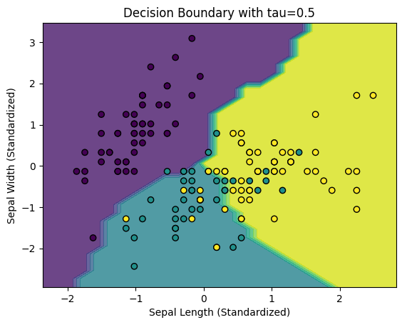
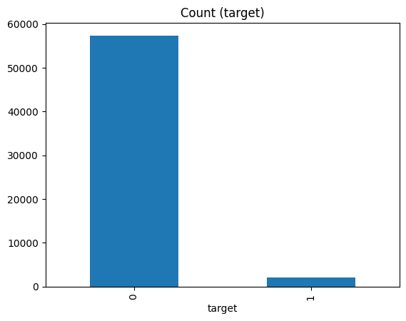
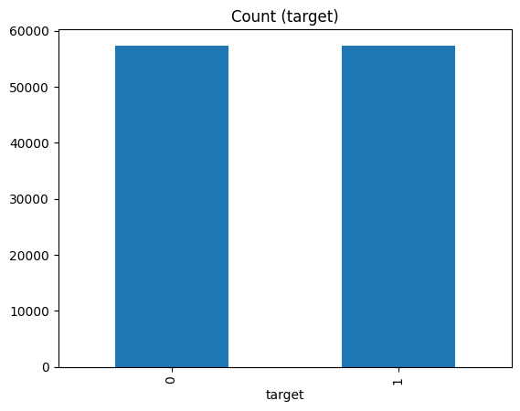
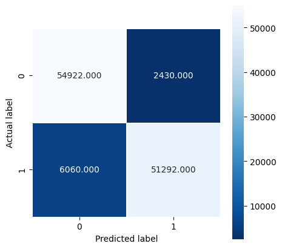
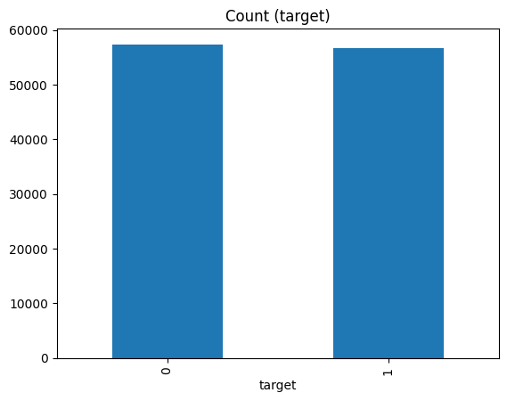
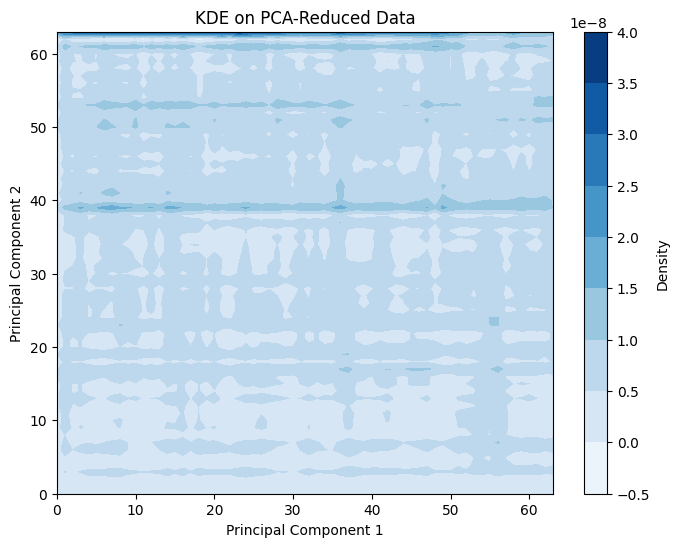

Homework 2
Question 1
Presented below is code of gradient boosting on a locally weighted regression algorithm. This code is then applied onto the dataset "concrete" which contains various feature variables detailing the attributes of concrete. These feature variables are then used to train and predict the y value "strength".
def loess(xtrain, ytrain, kern, tau, scalerType, alpha):
distances = cdist(xtrain, xtrain, metric='Euclidean')
scaler = scalerType
xscaled = scaler.fit_transform(xtrain)
weights = kernel_function(distances, kern, tau=0.05)
model = Ridge(alpha=alpha, max_iter=5000)
models = []
predictions = []
for i in range(len(xtrain)):
loess = model.fit(np.diag(weights[:, i]) @ xscaled, np.diag(weights[:, i]) @ ytrain)
predictions[i] = models[i].predict(X[i].reshape(1, -1))
models.append(loess)
return models, weights, scaler, predictions
Here is the code for the loess model created in homework 1. In this method, it scales the data and computes the distances to fit the loess model.
Implementation of Gradient Boosting
Below is the implementation of the gradient boosting into the loess model. This includes the methods fit, is_fitted, and predict, as well as the method cross_validate to cross-validate the data at the end.
class LOESS:
def __init__(self, kern='tricube', tau=0.05, alpha=0.01, scalerType=StandardScaler()):
self.kern = kern
self.tau = tau
self.alpha = alpha
self.scalerType = scalerType
self.is_fitted_ = False # To track if the model has been fitted
self.models = []
self.scaler = None
def fit(self, X, y, boosting_steps=10):
self.scaler = self.scalerType
X_scaled = self.scaler.fit_transform(X)
residuals = y.copy()
for step in range(boosting_steps):
distances = cdist(X_scaled, X_scaled, metric='euclidean')
weights = kernel_function(distances, self.kern, tau=self.tau)
model = Ridge(alpha=self.alpha, max_iter=5000)
predictions = np.zeros(len(X_scaled))
for i in range(len(X_scaled)):
loess_model = model.fit(np.diag(weights[:, i]) @ X_scaled, np.diag(weights[:, i]) @ residuals)
predictions[i] = loess_model.predict(X_scaled[i].reshape(1, -1))
residuals -= predictions
self.models.append(model)
self.is_fitted_ = True
def predict(self, X):
X_scaled = self.scaler.transform(X)
final_predictions = np.zeros(len(X_scaled))
for model in self.models:
step_predictions = np.zeros(len(X_scaled))
for i in range(len(X_scaled)):
step_predictions[i] = model.predict(X_scaled[i].reshape(1, -1))
final_predictions += step_predictions
return final_predictions / len(self.models)
def is_fitted(self):
return self.is_fitted_
def cross_validate(self, X, y, n_splits=10):
kf = KFold(n_splits=n_splits, shuffle=True, random_state=42)
mse_scores = []
for train_index, val_index in kf.split(X):
X_train, X_val = X[train_index], X[val_index]
y_train, y_val = y[train_index], y[val_index]
self.fit(X_train, y_train, boosting_steps=10)
y_pred = self.predict(X_val)
mse = mean_squared_error(y_val, y_pred)
mse_scores.append(mse)
return np.mean(mse_scores)
Gradient boosting is applied in the fit and predict methods. The method fit applies the loss function, and the residuals of the model represent how far away the predictions are from the true y values. The function performs this for boosting_steps number of iterations, which is optimized later in the code.
Scaler Testing
Below is the code for testing which scalar has the best MSE out of StandardScaler, MinMaxScaler, and QuantileTransformer.
scalers = [StandardScaler(), MinMaxScaler(), QuantileTransformer()]
mse_scalers = []
for scaler in scalers:
loess_model = LOESS(kern=Quartic, tau=0.05, alpha=0.01, scalerType=scaler)
X_train, X_test, y_train, y_test = train_test_split(x, y, test_size=0.2, random_state=42)
loess_model.fit(X_train, y_train, boosting_steps=10)
predictions = loess_model.predict(X_test)
mse = mean_squared_error(y_test, predictions)
mse_scalers.append(mse)
StandardScaler had an MSE of 1502.299, MinMaxScaler an MSE of 1299.467, and QuantileTransformer an MSE of 1311.889. Therefore, the best scaler to use on the concrete dataset is MinMaxScaler.
Kernel Testing
The code below tests for the best kernel out of Gaussian, Tricubic, Epanechnikov, and Quartic.
kernels = [Gaussian, tricubic, Epanechnikov, Quartic]
mse_kernel = []
for kernel in kernels:
loess_model = LOESS(kern=kernel, tau=0.05, alpha=0.01, scalerType=MinMaxScaler())
X_train, X_test, y_train, y_test = train_test_split(x, y, test_size=0.2, random_state=42)
loess_model.fit(X_train, y_train, boosting_steps=10)
predictions = loess_model.predict(X_test)
mse = mean_squared_error(y_test, predictions)
mse_kernel.append(mse)
Interestingly, the kernel did not matter as much as the scalar did, as all the MSE values had the same value at 1299.467, the same as the MSE from just testing the MinMaxScaler. Further research is required to find out why this is, as the kernel should generally change the outcome. Normally, the Epanechnikov kernel would yield the lowest MSE out of all the kernels.
Hyperparameter Testing
The code below shows the testing steps to determine the best hyperparameters. Here, I tested for the optimal number of boosting steps, tau, and alpha. The steps I chose were from 5-10, for tau 0.05-0.1, and for alpha 0.01 to 0.1. I did not want to include a huge range for any of these hyperparameters because the execution time was increasing exponentially. This was the best range I found that would execute in a timely manner while also covering a wide range of hyperparameters.
best_n_steps = None
best_tau = None
best_alpha = None
best_mse = float('inf')
for n_steps in [5, 10]:
for tau in [0.05, 0.1]:
for alpha in [0.01, 0.1]:
loess_boost_model = LOESS(kern='tricube', tau=tau, alpha=alpha, scalerType=MinMaxScaler())
X_train, X_test, y_train, y_test = train_test_split(x, y, test_size=0.2, random_state=42)
loess_model.fit(X_train, y_train, boosting_steps=n_steps)
predictions = loess_model.predict(X_test)
mse = mean_squared_error(y_test, predictions)
if mse < best_mse:
best_mse = mse
best_n_steps = n_steps
best_tau = tau
best_alpha = alpha
At the end of these processes, I determined that the best parameters to be used in the gradient boosting algorithm were 5 steps of boosting, a tau of 0.1, and an alpha of 0.1. This yielded the best MSE of 1158.985. Finally, the best model after all of the testing is shown here:
loess_model = LOESS(kern=Gaussian, tau=0.1, alpha=0.1, scalerType=MinMaxScaler())
Final Cross Validation
After testing it in a 10-split cross validation, the final MSE is 1361.708.
Comparison with eXtreme Gradient Boosting
Compared to the eXtreme Gradient Boosting (XGBoost), the MSE is significantly higher. The eXtreme model ended with an MSE of 23.730, which is magnitudes lower than my self-implemented gradient boosting and LOESS algorithm. Clearly, there is a critical error within my implementation, but I was not able to determine where this is.
Homework 2 - Question 2
Iris Dataset Classification
Using the iris dataset, which contains 4 feature variables describing the physical characteristics of irises, I implemented locally weighted logistic regression to classify which species of flower they belonged to based on these features. Below is my implementation of locally weighted logistic regression:
def lwlr(X, y, x_query, tau):
m = len(y)
weights = np.array([kernel(x_query, X[i], tau) for i in range(m)])
W = np.diag(weights)
theta = np.linalg.pinv(X.T @ W @ X) @ X.T @ W @ y
return expit(x_query @ theta)
To accommodate all possible classifications in this multiclass dataset (which contains 3 possible categories), I used a one-vs-all approach. This means that for each category, the algorithm performs binary classification: 1 vs not 1, 2 vs not 2, or 3 vs not 3.
def predict_multiclass_lwlr(X, y, X_query, tau):
n_classes = len(np.unique(y))
predictions = []
for c in range(n_classes):
binary_y = np.where(y == c, 1, 0)
class_preds = [lwlr(X, binary_y, x_query, tau) for x_query in X_query]
predictions.append(class_preds)
predictions = np.array(predictions).T
return np.argmax(predictions, axis=1)
Testing this implementation on the iris dataset yielded an accuracy of 81.33%. The one-vs-all approach worked effectively for this multiclass problem.
One-vs-All Classification
As noted, this dataset contains 3 categories, so the one-vs-all method converts the multiclass problem into multiple binary classification problems. Each classifier predicts whether a sample belongs to one specific class or not.
Comparison with Calvin Chi’s Algorithm
Using Calvin Chi’s algorithm with a similar one-vs-all approach also resulted in an accuracy of 81.33%. Both implementations produced the same result. Below is a visualization of how these algorithms categorized the data. The colored dots represent the true class labels, while the colored sections indicate the algorithm's predictions.

Homework 3
Question 1: SCAD Algorithm
SCAD stands for smoothly clipped absolute deviation. This algorithm is a regularization and variable selection algorithm, most similar to other algorithms such as LASSO and ElasticNet. The benefit of using SCAD is that it alleviates the bias which affects algorithms like LASSO. Using the SCAD penalty and derivative function found on Andy Jones’ implementation below, I modified previous code used for ElasticNet and adapted it to use the SCAD algorithm.
# Modified for usage with torch
def scad_penalty(beta_hat, lambda_val, a_val):
is_linear = (torch.abs(beta_hat) <= lambda_val)
is_quadratic = (lambda_val < torch.abs(beta_hat)) & (torch.abs(beta_hat) <= a_val * lambda_val)
is_constant = (a_val * lambda_val) < torch.abs(beta_hat)
linear_part = lambda_val * torch.abs(beta_hat) * is_linear
quadratic_part = (2 * a_val * lambda_val * torch.abs(beta_hat) - beta_hat**2 - lambda_val**2) / (2 * (a_val - 1)) * is_quadratic
constant_part = (lambda_val**2 * (a_val + 1)) / 2 * is_constant
return linear_part + quadratic_part + constant_part
def scad_derivative(beta_hat, lambda_val, a_val):
return lambda_val * ((beta_hat <= lambda_val) + (a_val * lambda_val - beta_hat) * ((a_val * lambda_val - beta_hat) > 0) / ((a_val - 1) * lambda_val) * (beta_hat > lambda_val))
These methods are then used to calculate the penalty when training the SCAD model. Below is the modified SCAD model that integrates the penalty into the loss function.
class SCAD(nn.Module):
def __init__(self, input_size, alpha=1.0, lambda_val=0.1, a_val=0.5):
super(SCAD, self).__init__()
self.input_size = input_size
self.alpha = alpha
self.a_val = a_val
self.lambda_val = lambda_val
self.linear = nn.Linear(input_size, 1, dtype=torch.float64)
def forward(self, x):
return self.linear(x)
def loss(self, y_pred, y_true):
mse_loss = nn.MSELoss()(y_pred, y_true)
scad_reg = scad_penalty(self.linear.weight, self.lambda_val, self.a_val).sum()
loss = mse_loss + self.alpha * scad_reg
return loss
def fit(self, X, y, num_epochs=100, learning_rate=0.01):
optimizer = optim.SGD(self.parameters(), lr=learning_rate)
for epoch in range(num_epochs):
self.train()
optimizer.zero_grad()
y_pred = self(X)
loss = self.loss(y_pred, y)
loss.backward()
optimizer.step()
if (epoch + 1) % 10 == 0:
print(f"Epoch [{epoch + 1}/{num_epochs}], Loss: {loss.item()}")
def predict(self, X):
self.eval()
with torch.no_grad():
y_pred = self(X)
return y_pred
def get_coefficients(self):
return self.linear.weight
Using the concrete dataset, I trained a SCAD model on a train-test split of the data, with the final test loss at 102.4876. After training the model, I obtained the learned weights to determine which features were useful. The closer a feature's coefficient is to 0, the less important it is.
Feature Importance
The feature with the lowest importance was the amount of ash in the concrete, with a weight of -0.1623.
Question 2: Testing Algorithms on Simulated Data
Using the code to generate simulated data from the lecture, I tested the three algorithms: ElasticNet, square root LASSO, and my SCAD implementation. Below is the function to generate correlated features:
def make_correlated_features(num_samples, p, rho):
vcor = []
for i in range(p):
vcor.append(rho**i)
r = toeplitz(vcor)
mu = np.repeat(0, p)
x = np.random.multivariate_normal(mu, r, size=num_samples)
return x
The final results were:
- ElasticNet MSE: 1.0150
- Square Root LASSO MSE: 1.0439
- SCAD MSE: 0.6941
The SCAD algorithm had the lowest MSE and therefore performed the best on this simulated dataset.
Question 3: Cross Validation
To determine the best weights for the penalty function and cross-validate the results, I created a modified version of a previous cross-validation function to work with tensors and include a model parameter.
def cross_validate_model(model_class, X_tensor, y_tensor, alpha_vals, num_epochs=100, learning_rate=0.01, k_folds=5):
kf = KFold(n_splits=k_folds, shuffle=True, random_state=42)
best_alpha = None
best_mse = float('inf')
for alpha in alpha_vals:
fold_mses = []
for train_idx, val_idx in kf.split(X_tensor):
X_train, X_val = X_tensor[train_idx], X_tensor[val_idx]
y_train, y_val = y_tensor[train_idx], y_tensor[val_idx]
model = model_class(input_size=X_train.shape[1], alpha=alpha)
model.fit(X_train, y_train, num_epochs=num_epochs)
y_pred = model.predict(X_val)
mse = nn.MSELoss()(y_pred, y_val).item()
fold_mses.append(mse)
mean_mse = np.mean(fold_mses)
if mean_mse < best_mse:
best_mse = mean_mse
best_alpha = alpha
return best_alpha, best_mse
Using this method, I tested the three models to determine the best weights and evaluated the best weights and used that model to find the ideal model size. The results were similar to the previous question, with square root lasso resulting in a best cross validated mse of 3.1084, with the best alpha being 0.0215. The cross validated mse for ElasticNet was 1.8336, the best alpha was 0.0599. The best model was SCAD, with a cross validated mse of 1.8198 and the best alpha was 0.1668. Using this alpha and the SCAD algorithm on the concrete dataset, the best model was a model excluding the ash feature variable, as its weight was only 0.0881 which is very close to 0. So the best model would use the SCAD weights for cement, slag, water, superplastic, coarseagg, fineagg, and the age feature variables.
Homework 4 - Porto Seguro Safe Driver Prediction
The Porto Seguro Safe Driver Prediction is an example of an unbalanced dataset. This type of dataset is binary, with two distinct target classes of 0 and 1, where one class dominates the other in terms of the number of data points proportionally. For this dataset, there are only 2 classes: 0 or 1. As seen below, class 0 contains 573,518 data points, while class 1 contains 21,694. This is a proportion of about 26.44 to 1.

Upon testing this dataset using a logistic regression model, it yields satisfactory results on the surface, with an accuracy of 96.36%. However, upon closer inspection, the regression model completely neglects the minority class (class 1). To understand this better, we use a confusion matrix. As shown below, the model labels all cases as class 0, and because the vast majority of data points are class 0, this yields a high accuracy score. Evidently, this is not exactly what we want, so we will use methods such as Synthetic Minority Oversampling (SMOTE), ADASYN, and Normalizing Flows to oversample the minority class.

Data Visualization and Model Testing Methods
These are the methods used to visualize and test on the data. We are using a Logistic Regression model due to its simplicity. Our goal is to test the effectiveness of the data generating algorithms, not the learning model itself.
def plot_count(data):
target_count = data.target.value_counts()
print('Class 0:', target_count[0])
print('Class 1:', target_count[1])
print('Proportion:', round(target_count[0] / target_count[1], 2), ': 1')
target_count.plot(kind='bar', title='Count (target)');
def test_acc(X, y):
x_scaled = StandardScaler().fit_transform(X)
model = linear_model.LogisticRegression()
skf = StratifiedKFold(n_splits=10, shuffle=True, random_state=1)
lst_accu_stratified = []
y_pred_all = []
for train_index, test_index in skf.split(X, y):
x_train_fold, x_test_fold = x_scaled[train_index], x_scaled[test_index]
y_train_fold, y_test_fold = y.iloc[train_index], y.iloc[test_index]
model.fit(x_train_fold, y_train_fold)
lst_accu_stratified.append(model.score(x_test_fold, y_test_fold))
y_pred = model.predict(x_test_fold)
y_pred_all.extend(y_pred)
print('Average Accuracy', np.mean(lst_accu_stratified))
return y_pred_all
def plot_confusion(y_true, y_pred):
cm = confusion_matrix(y_true, y_pred)
plt.figure(figsize=(5,5))
sns.heatmap(cm, annot=True, fmt=".3f", linewidths=.5, square = True, cmap = 'Blues_r')
plt.ylabel('Actual label')
plt.xlabel('Predicted label')
Data Sampling and Stratification
Before starting, this dataset contains a large amount of variables, so for expediency, we only use 10% of the data. By using stratified k-fold, we can keep the same proportion of class 0 to class 1.
SMOTE Algorithm
Using the SMOTE algorithm, a preprocessing algorithm that creates artificial data points for the minority class, we can balance out class 1 and 0 to an even proportion of 1:1. We get an average accuracy of 92.59% across a stratified 10-fold cross validation. Below is the confusion matrix.
 ADASYN Algorithm
Using the ADASYN algorithm, which creates synthetic samples based on the feature space of the original data, we again balance out the classes to a 1:1 proportion. We get an average accuracy of 92.67% across a stratified 10-fold cross validation, slightly more accurate than the SMOTE algorithm.

Kernel Density Estimation (KDE)
There is also a technique called fastKDE (kernel density estimation), which is a function that estimates the probability density function (pdf) of a data sample. This is useful for gaining a high-level understanding of a data sample’s distribution. However, this algorithm is affected by the Curse of Dimensionality and struggles with higher-dimensional data, so we use PCA to reduce the number of feature variables.
pca = PCA(n_components=2)
X_reduced = pca.fit_transform(Xs)
X_reduced
Below is a graph depicting the KDE on a PCA-reduced dataset. Here, it is easy to see that data falls into “baskets” of high concentrations of similar data points. This is due to the nature of the original dataset, which contains 58 feature variables of ordinal numbers, and the effect of combining all of these variables into just 2 feature variables using PCA.
Normalizing Flows
Finally, we can use normalizing flows to oversample the minority class, a technique that transforms simple probabilistic problems into more complex problems through a series of invertible and differentiable mappings. The code for this process is adapted from Professor Vasiliu’s GitHub, with some modifications to adapt to the dataset. Below, I am applying the transformation:
device = torch.device('cuda')
num_features = 58
num_layers = 5
base_dist = ConditionalDiagonalNormal(shape=[num_features], context_encoder=nn.Linear(1, 2 * num_features))
transforms = []
for i in range(num_layers):
transforms.append(ReversePermutation(features=num_features))
transforms.append(MaskedAffineAutoregressiveTransform(features=num_features,
hidden_features= 4 * num_features,
context_features=1))
transform = CompositeTransform(transforms)
flow = Flow(transform, base_dist).to(device)
optimizer = optim.Adam(flow.parameters())
Here, I am training the model using the log probabilities. We are using tensors here instead of np.arrays. I chose a range of 10,000 iterations because this algorithm is computationally expensive, and 10,000 strikes a balance between computational time and model accuracy.
for i in range(10000):
X = train_sample.drop('target', axis=1).values
y = train_sample['target'].values
X = torch.tensor(X, dtype=torch.float32, device=device)
y = torch.tensor(y, dtype=torch.float32, device=device).reshape(-1, 1)
optimizer.zero_grad()
loss = -flow.log_prob(inputs=X, context=y).mean()
loss.backward()
optimizer.step()
Using more of the code from Professor Vasiliu’s Normalizing Flow examples, we found the final prediction accuracy to be 96.36%, the highest among the minority oversampling algorithms.